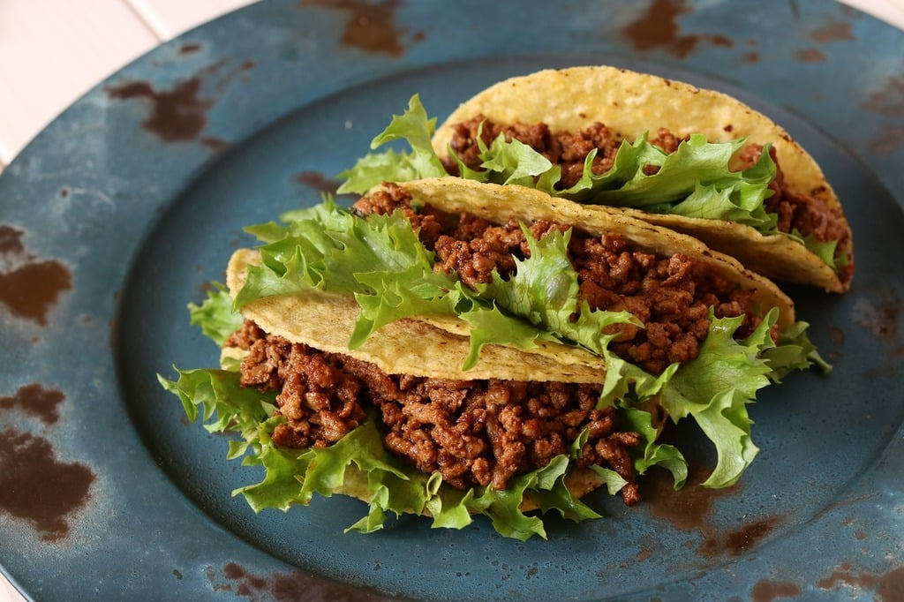

Robust Tacos

Here's a question, who doesn't like tacos?
I certainly don't know anybody who dislikes a flavorful taco.
Here's is a taco recipe that will fill you up and taste amazing!
Preparation/Outcome
- Prep Time: 10 minutes
- Cook Time: 25 minutes
- Total Time: 35 minutes
- Servings: 6
Ingredients
- Ground Beef: 2 pounds
- Chopped Onion: 1
- Minced Garlic: 2 tablespoons
- Salt & Pepper: 1 teaspoon each
- Cayenne Pepper: 1 half teaspoon
- Chili Powder: 4 teaspoons
- Cumin & Dried Cilantro: 2 teaspoons each
- Beef Broth: 5 and half cups
- White Corn Tortillas
- Cooking Oil: 1 tablespoon
- Shredded Monterey Jack Cheese
- Sour Cream
- Pico De Gallo
- Taco/Hot Sauce
- Shredded Lettuce
Steps
- Cook Ground Beef/Add Spices: Add ground beef and a chopped onion to a skillet over medium high heat.
Once beef is cooked through drain the grease grease.
Add minced garlic, all seasonings and beef broth.
- Boil Contents: Bring to a boil then lower the heat.
Cover and let simmer for about 20 minutes until the liquid has reduced.
- Cooking Tortillas/Adding Meat: In a separate pan, heat the skillet over medium heat and add some oil to the skillet.
Lay out a few of the tortillas and tip them with shredded Monterey Jack cheese.
Top each one with a spoonful of taco meat.
Fold the tortillas over and cook on both sides until golden brown and crispy.
- Toppings/Serving: Lay the tacos out on paper towels to absorb any extra grease.
Top tacos with your favorite toppings and enjoy!